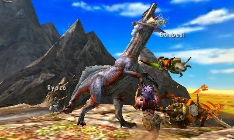
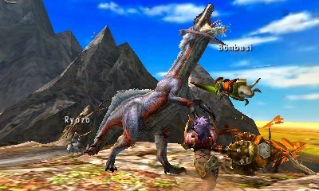
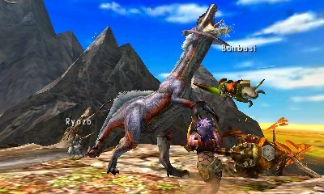

L'entreprise CAPCOM, créateur des jeux populaires Resident Evil, Street Fighter, Devil May Cry et bien d'autres, décide de mettre en vente le 21 septembre 2004 sur PlayStation 2 leur nouvelle licence "Monster Hunter".
Monster Hunter est un jeu de rôle d'action où le joueur incarne un chasseur qui traque de grands monstres dans un univers fantastique. Il doit accomplir des quêtes et améliorer son équipement à partir des matériaux récupérés en dépeçant les monstres chasser.
Tous les titres de la série proposent un mode multijoueur jusqu'à quatre joueurs en coopération,
mais peuvent aussi être joués en solo avec l'aide d'un "Palicos", un compagnon félin personnalisable qui vous aidera de divers manières.
Il vous soignera lorsque vous êtes atteint d'un effet néfaste ou que vous êtes à court de PV, il attaquera également le monstre avec divers attaques ou pièges pour l'affaiblir et rendre la chasse plus facile.
Après avoir accepté une quête, spécifiant le monstre à chasser,les condition et les récompences, vous êtes téléporté au camp de la carte. Vous devez rechercher votre cible et la chasser pour accomplir la quête.

Le jeu propose une variété de 14 types d'armes différentes, permettant d'adopter différents styles de combat : épée, marteau, arc, armes à feu, ainsi que des armes plus exotiques.
Les talents et les éléments jouent un rôle stratégique dans Monster Hunter. En fonction du monstre chassé, les armes et armures peuvent conférer des effets élémentaires efficaces ou non contre un adversaire.
Le gameplay tourne autour d'un systeme de combo qui changera selon l'arme choisi,le joueur peut également crafter ou acheté des consomables pour se soigner ou effectuer des dégat suplémentaire au monstre.
en effectuant une attaque sautée, le joueur aura une chance de réaliser une attaque rodéo et ainssi grimper sur le dos du monstre pour lui infliger de lourd dégat sans risquer de prendre un coup.


A première vu l'histoire de Monster Hunter est assez simple, vous incarner un chasseur qui accomplit des quête donner par différents PNJ jusqu'a ce qu'un événement clé se produise: anomalie environementale, rencontre direct en face a face avec le monstre clé du jeu ou autres évenement.
Vous parter donc enquêter sur cette événement pour trouvez et traquer l'éléments déclencheur afin d'y mettre un termes.

néanmoins le jeu cache un lore bien plus compliqué,vous pourrez le découvrir en cherchant à différents endroits, comme par exemple:
via des dissutions avec les PNJ(personnage non joueur).
via des descriptions sur les matériaux, les armes, les armures ou les monstres.
ou via des éléments fournis par CAPCOM: site internet, livre etc...
Considéré comme le plus puissant des monstres le "Fatalis" est un dragon ancien, une sous-espèce de monstre reconnue par sa rareteé et son pouvoir dévastateur.Les histoires sur ce dragon légendaire remontent à l'antiquité, beaucoup de chasseurs expérimentés ont cherché à le défier, mais aucun n'est jamais revenu.

Cette zone représente la base d'interception du château Schrade détruit il y a longtemps au cours d'une nuit sanglante par le dragon noir. Ils s'en échappent une pluie torrentielle s'abattant avec fracas sur les ruines de pierre et d'acier de cette ancienne cité autrefois glorieuse. Il y règne une ambiance crépusculaire de fin du monde.
Dans le jeu il est mentionné que le fatalis a la capacité de se regénérer à l'aide d'une seule écaille, ce qui le rendrait immortel, plusieurs descriptions de l'armure fatalis laissent à entendre, que ceux qui portent trop longtemps l'armure, sombrent dans la folie avant de disparaître à tout jamais. les joueurs ont établi une théorie que le fatalis prendrait le contrôle du corps du chasseur depuis l'armure en fusionnant avec, pour finaliser sa regénération et reprendre sa forme de monstre d'origine.
Voilà qui conclut la présentation du jeu, désormais c'est à vous de partir et de devenir chasseur, forger votre propre réputation et votre propre style en affrontant des monstres légendaires.